内容审核 Workflow
准确率上去了，置信度分流却失效了
工作流里，置信度低于 0.7 或代码核对失败的评论会转人工复核。v1 送人工的 10 条里有 9 条确实判错了，低置信度能把错例筛出来。
v2 只改了提示词，测试集准确率从 80.0% 升到 95.0%，漏判率从 25.0% 降到 5.0%。但置信度集中到了 0.65–0.95：送人工的 9 条全部判对，4 条错例全都进了自动标注。
下一步该改的是置信度校准或分流规则，而不是继续调分类提示词。只看准确率会漏掉这个问题。

准确率从 80.0% 升到 95.0%，置信度分流却失效了：送人工的 9 条全部判对，4 条错例全都进了自动标注。
内容审核 Workflow · 看复盘
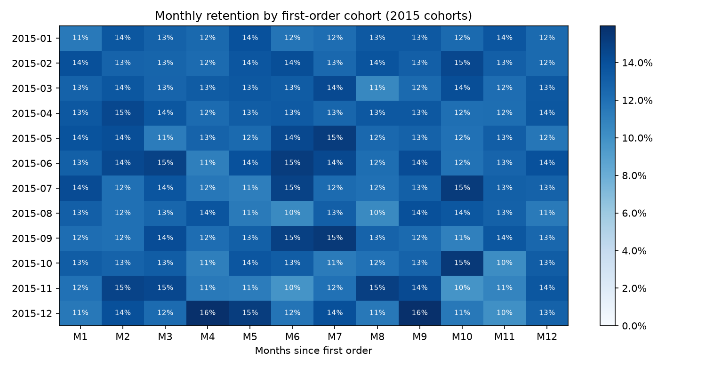
从 2017 年 10 月起，每个月的新客占比都是 100%。不是业务变化，是客户 ID 断档：每笔订单都被算成了一个新客户。
电商运营分析 · 看复盘
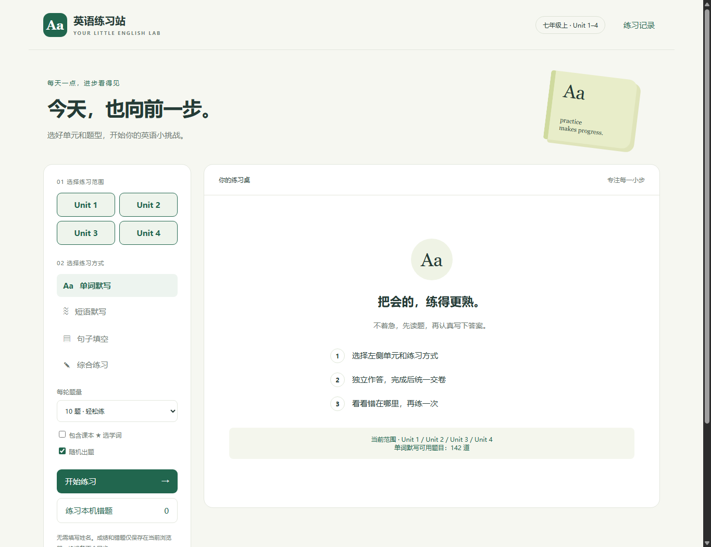
57.3% → 34.3%
延误主要来自承诺时效的设定：First Class 承诺 1 天，实际 2 天。按实际时效设定承诺，全网延误率的情景测算。
电商运营分析
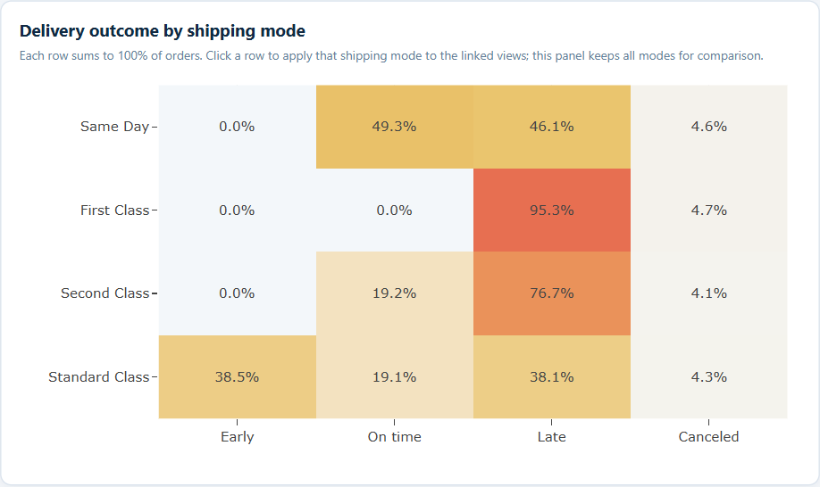
复盘
数字都来自对应仓库里的运行记录。
内容审核 Workflow
工作流里，置信度低于 0.7 或代码核对失败的评论会转人工复核。v1 送人工的 10 条里有 9 条确实判错了，低置信度能把错例筛出来。
v2 只改了提示词，测试集准确率从 80.0% 升到 95.0%，漏判率从 25.0% 降到 5.0%。但置信度集中到了 0.65–0.95：送人工的 9 条全部判对，4 条错例全都进了自动标注。
下一步该改的是置信度校准或分流规则，而不是继续调分类提示词。只看准确率会漏掉这个问题。
电商运营分析
算复购率之前，先检查了客户 ID 是否连续。结果发现从 2017 年 10 月起，每个月的新客占比都是 100%：订单数等于客户数。
这不是业务变化，是客户 ID 断档：从那个月开始，每笔订单都被算成了一个新客户。
复购分析只用 2015-01 至 2017-09 的数据，否则复购率会被低估。指标算出来之前，先看数据本身对不对。
A/B 实验
用固定随机种子做了 2,000 次 A/A 测试：两组没有任何差别，显著的比例理论上应该在 5% 左右。实验结束才看一次，假阳性是 4.3%；每天看一次、显著就停，升到 20.1%。
同一个流程里还做了样本量计算（转化率 10% → 11% 时每组需要 14,751 人）、SRM 检查，以及 CUPED 方差缩减（置信区间宽度缩小 41.8%）。
样本量和停止规则要在实验前定好。
关于
莫纳什大学（Monash University）应用数据科学本科在读，2025 – 2028，全英文授课。喜欢把具体需求做成能用的小产品，然后用数据检查它到底有没有用。
围绕共享单车的还车反馈做数据分析和知识支持：用 SQL 和 pandas 统一首次还车成功率等指标口径、维护 Power BI 看板、定位需要优先核查的停车点；为内部 RAG 问答原型整理规则资料、编写 Prompt，并用 240 条样例检查回答。
备课、授课、批改作业和课后反馈。教学里遇到的真实需求，变成了小程序和课堂练习站。
统计建模、数据分析（R、Python、可视化）、算法与数据结构（C++）。
常用工具
联系
AI 应用 · 评测 · 个人项目
在扣子上搭的评论审核预标注流程：先检索规则，再让大模型判定，代码节点核对，拿不准的转人工。
审核或标注团队想先让模型做一遍预标注：把握大的直接入库，有疑问的交给人。所以要看两件事：分对了多少，以及送人工的那部分是不是真的该给人看。
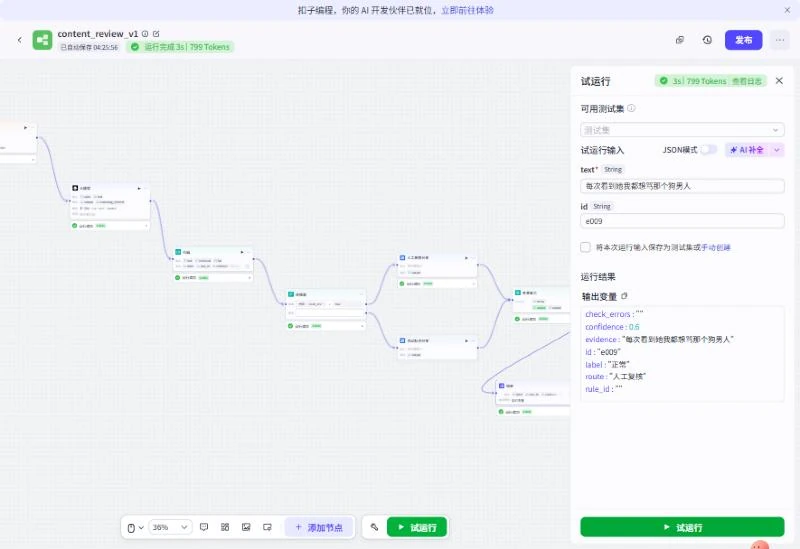
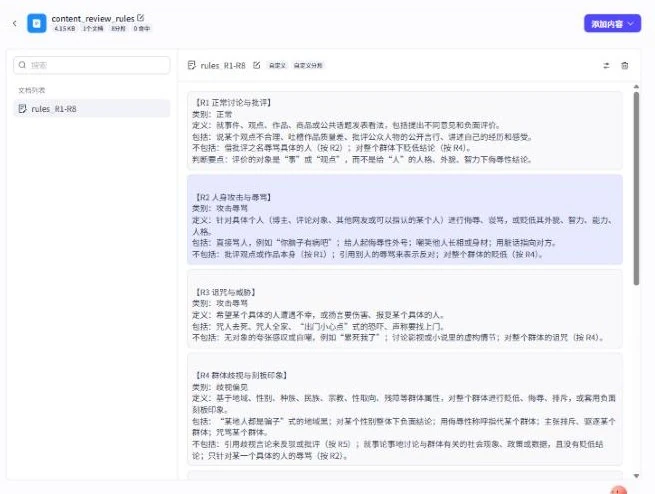
数据分析 · SQL · 看板 · 个人项目
同一份数据做三层：R Shiny 交互看板、10 个 DuckDB SQL 查询、Python 延误预测。三层口径一致，SQL 结果和看板逐项交叉核对。
配送延误率很高。延误来自哪里？下单时能不能预判？
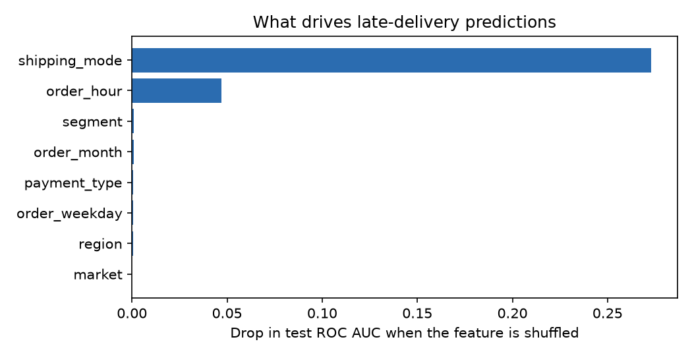
LaunchPad Hacks 2026 · 两人团队
面向 ADHD 等注意力、阅读困难的学生的规章问答：只按原文回答，每句附出处，服务器逐字核对引文。我负责产品构想、初版 Prompt 和前端设计思路。
学生要从很长的英文规章里找截止时间和下一步，容易漏看；通用 AI 摘要又可能编造或改动日期。对 ADHD、阅读困难和英语二语的读者影响最大。
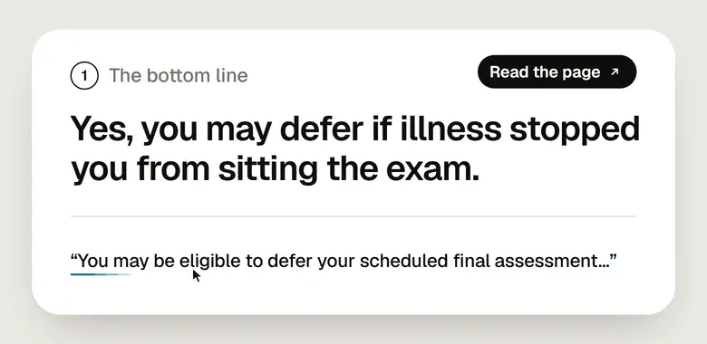
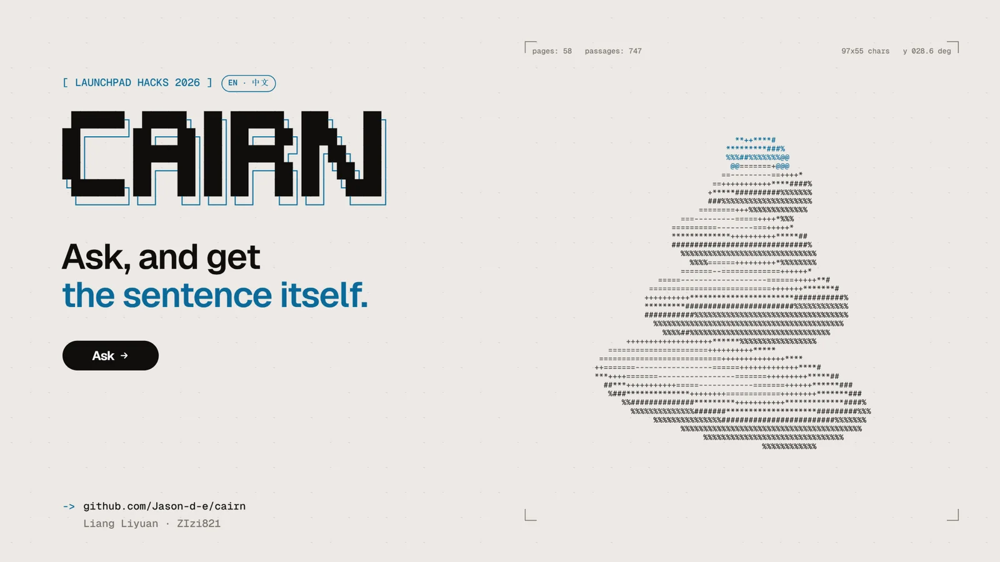
静态演示 ↗Cairn 仓库 ↗TraceDesk Lite 仓库 ↗
产品 · AI 编程 · 个人项目
给自己一对一英语教学做的微信小程序，持续用于真实教学。课程记录、背词、小测、错题和口语模考原来散在聊天记录和纸上，现在在一个工具里。
按“没记住 / 有点难 / 记住了 / 太简单”和拼写结果更新每个词的记忆状态，用遗忘曲线估计回忆概率，预计降到 90% 时安排复习。每次复习前先记下预测值，再用 Brier Score 检查预测准不准。
手机上读音加载慢、偶尔播不出。定位到每次播放都要先加载整段合辑，改成每个单词一个短音频，加上超时重试、合辑回退，并预缓存当天要学的词。
用 Codex 和 Claude Code 开发：先写清需求、约束和验收标准，每个功能配测试；22 个单元测试文件和 12 个校验脚本全部通过才上传。
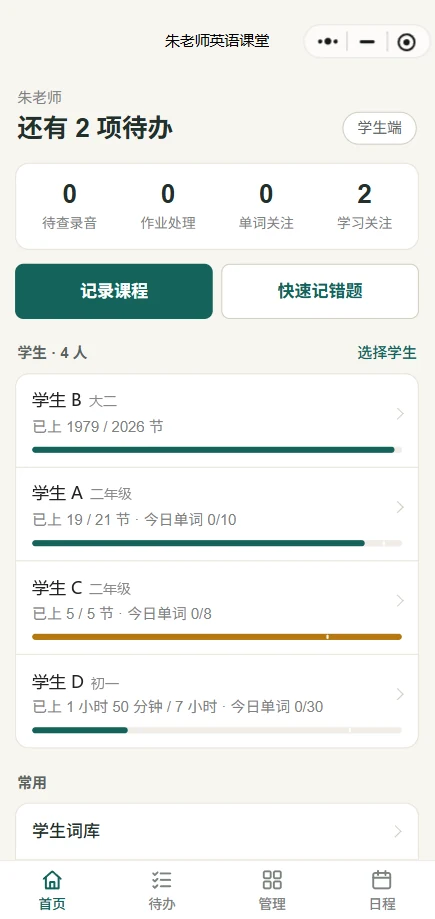
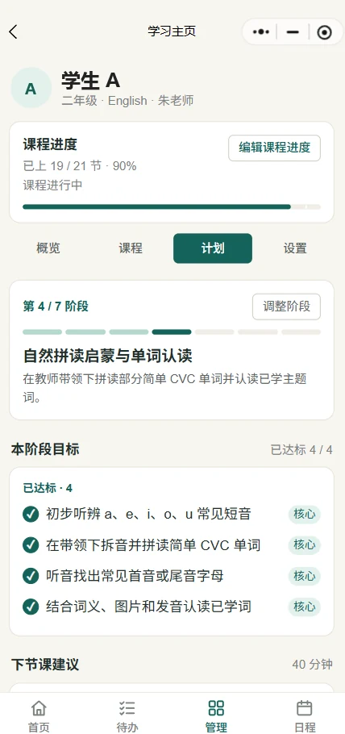
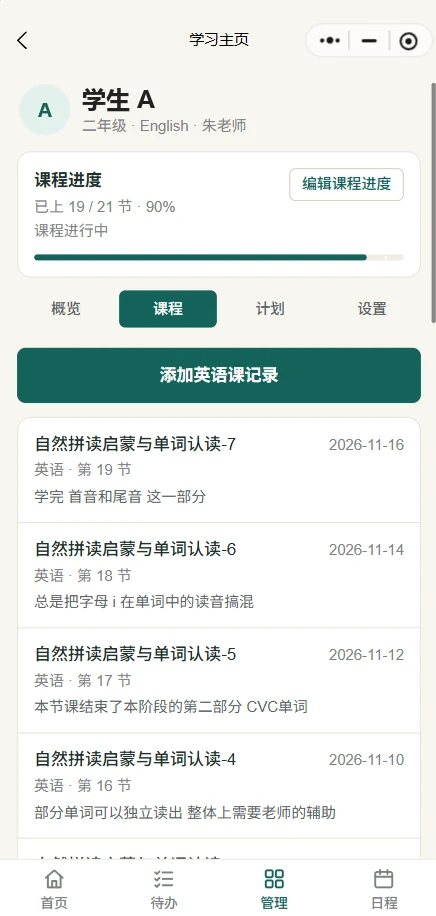
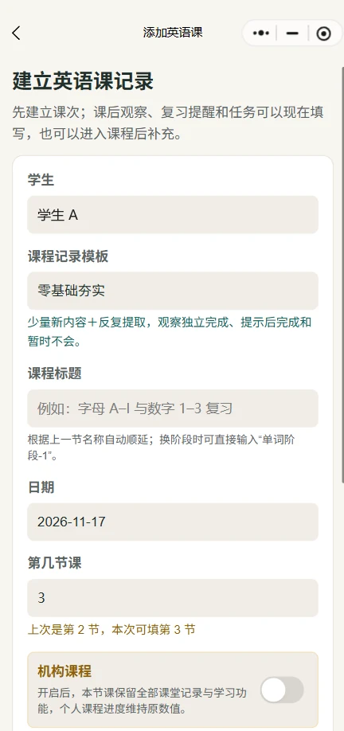
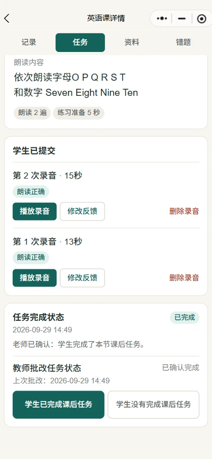
学生姓名已替换为“学生 A / B / C / D”。
统计 · A/B 实验 · 个人项目
用 R 做的四个分析：概率建模、假设检验、回归与分类、一次 A/B 实验从设计到结论的完整流程。
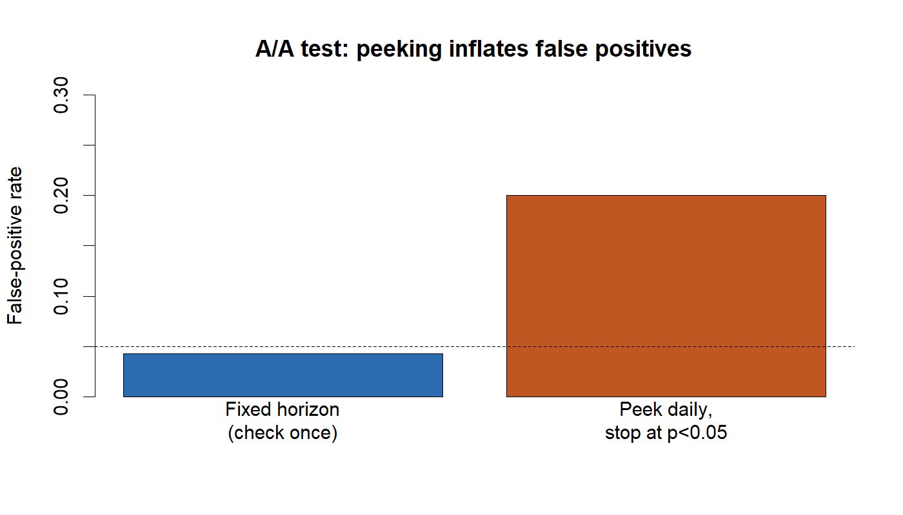
课程团队项目 · FIT1055 · 2026.10
团队提出 RTPL（骑手配送时限保护）方案：AI 调度给出的送达时间先经过安全时限校验，再给骑手和顾客看；延误要有证据才算到骑手头上；有争议可以申请人工复核，并留下审计记录。我负责汇报网站和手机端交互原型。
AI 调度建议 12:24 送达，但这段路实际要 34 分钟，按 12:24 送到要骑 120 km/h。RTPL 在 AI 建议的时间和按最短合规用时（34 分钟）算出的时间里取较晚的一个，骑手和顾客看到的都是 12:34。
订单、路线、城市和 AI 建议都是模拟数据。保护规则不是我写的。
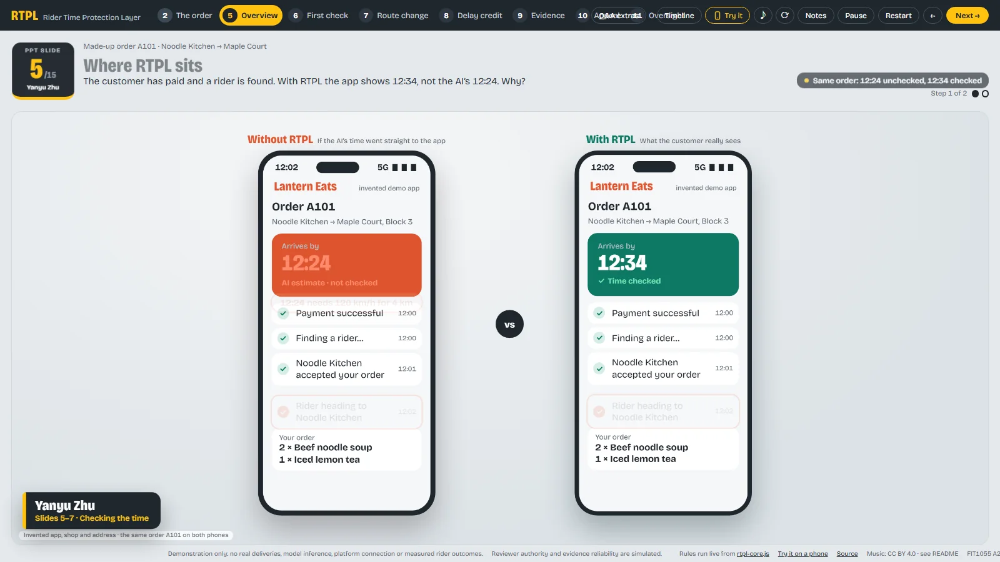
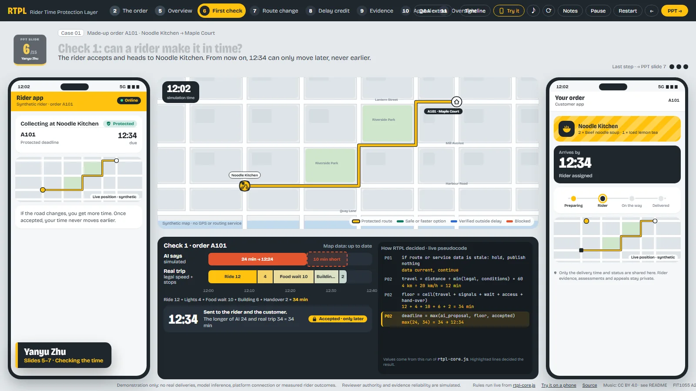